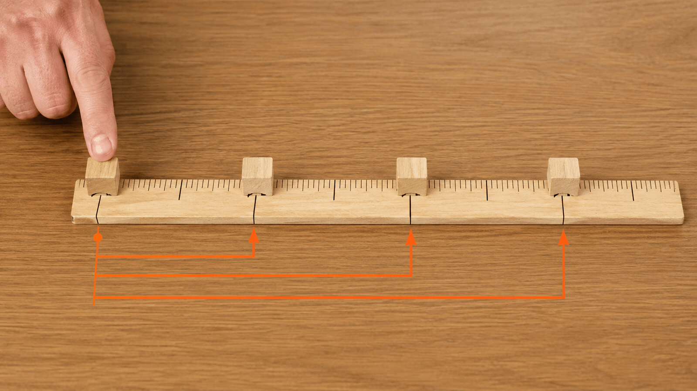
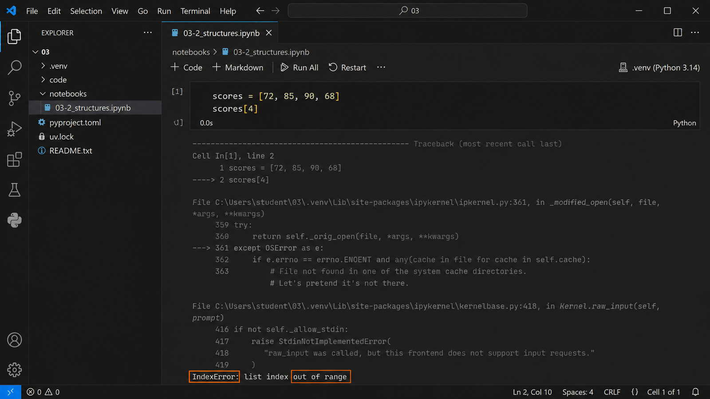
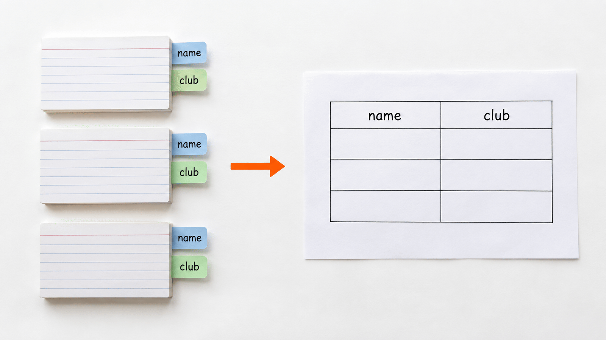

여러 값을 묶는 두 가지 방법组合多个值的两种方法
이름을 하나씩 붙이다 보면 막힌다一个个起名字会遇到瓶颈
korean_score = 82 english_score = 91 math_score = 76
우리 반 여덟 명의 점수를 이렇게 적으면 몇 줄이 될까요? 학년 전체면?把班上八个人的分数这样写要几行？整个年级呢？
2-2에서 값 하나에 이름 하나를 붙였습니다. 값이 여덟 개, 백 개가 되면 이름을 그만큼 지어야 하고, 다 지어도 “세 번째 사람의 점수”를 꺼내려면 그 이름을 기억하고 있어야 합니다.2-2 中给一个值起一个名字。值变成八个、一百个时就要起同样多的名字，而且即使都起好了，要取“第三个人的分数”还得记住那个名字。
그래서 값이 여러 개일 때는 하나로 묶어 두고 필요할 때 꺼내는 방법을 씁니다. 오늘은 그 방법 두 가지를 봅니다.因此值有多个时会先组合起来，需要时再取出。今天看这两种方法。
list는 순서로 묶는다list 按顺序组合 실습实践
여러 값을 순서대로 묶은 것을 list라고 합니다. 대괄호 [] 안에 값을 쉼표로 나열합니다.把多个值按顺序组合起来叫 list。在方括号 [] 内用逗号列出值。
scores = [72, 85, 90, 68] print(scores)
[72, 85, 90, 68]
scores라는 이름 하나에 값 네 개가 들어 있습니다.一个名为 scores 的名称里装了四个值。
개발에서는 이렇게 순서대로 늘어선 값의 묶음을 배열(array)이라고 부르기도 합니다. Python에서는 list라고 부릅니다. AI가 둘 중 어느 이름으로 말해도 같은 것을 가리키는 경우가 많습니다.在开发中，这样按顺序排列的值的集合也叫数组(array)。Python 中称为 list。AI 用其中任一名称时，通常指的是同一样东西。
값이 늘어서고 자리마다 번호가 붙는다值排成一行，每个位置都有编号

번호로 하나씩 꺼내 본다用编号逐个取出来看 실습实践
print(scores[0]) print(scores[1]) print(scores[2]) print(scores[3])
72 85 90 68
번호는 0부터 시작한다编号从 0 开始 핵심核心
scores[0]이 72였습니다. 그럼 0은 무슨 뜻일까요?scores[0] 是 72。那么 0 是什么意思？
scores[0]의 0은 “첫 번째”라는 번호가 아닙니다. “맨 앞에서 0칸 떨어진 곳”이라는 뜻입니다.scores[0] 中的 0 不是“第一个”这个序号，而是“距离最前面0 格”的意思。
자를 대고 길이를 잴 때를 떠올려 보세요. 자의 시작점은 1cm가 아니라 0cm입니다. 시작점에서 아무 데도 안 갔으면 0입니다.想想用尺子量长度时，尺子的起点不是 1cm 而是 0cm。从起点没有移动就是 0。

거리로 읽으면 마지막 번호가 풀린다按距离读，最后一个编号就清楚了 핵심核心
| 번호编号 | 뜻含义 | 값值 |
|---|---|---|
0 | 맨 앞에서 0칸距最前 0 格 | 72 |
1 | 맨 앞에서 1칸距最前 1 格 | 85 |
2 | 맨 앞에서 2칸距最前 2 格 | 90 |
3 | 맨 앞에서 3칸距最前 3 格 | 68 |
번호가 아니라 거리로 읽으면 그다음이 저절로 풀립니다. 값이 4개이면 마지막 번호는 3입니다. 개수보다 하나 작습니다.按距离而不是序号来读，后面就自然明白了。值有 4 个时最后的编号是 3，比个数小一。
범위를 넘으면 멈춘다超出范围就会停止 실습实践
이 셀은 오류가 나는 것이 정상입니다. 긴 글을 다 읽지 말고 마지막 줄만 보세요.这个单元格出错是正常的。不用读完长文，只看最后一行。
지금 scores에 든 값은 네 개입니다. 자리 번호는 0 · 1 · 2 · 3이고, 4번 자리는 없습니다. 아래에서 일부러 그 없는 자리를 불러 봅니다.现在 scores 里有四个值。位置编号是 0 · 1 · 2 · 3，没有 4 号位置。下面故意去叫这个不存在的位置。
print(scores[4])
IndexError: list index out of range
IndexError와 out of range가 보입니다. index는 자리 번호, range는 범위라는 뜻입니다. 그러니까 「자리 번호가 범위를 벗어났다」는 말입니다. 값이 네 개인데 4번을 불렀으니 없는 자리입니다.可以看到 IndexError 和 out of range。index 是位置编号，range 是范围，合起来就是「位置编号超出了范围」。只有四个值却叫了 4 号，那是不存在的位置。
없는 자리를 부르면 프로그램이 멈춥니다. 코드를 고치지 않아도 됩니다. 이 사실만 확인하고 넘어갑니다.叫了不存在的位置，程序就会停止。不用修改代码，确认这一点即可。
오류 문장에서 볼 것은 두 부분뿐이다报错里只需要看两个部分

하나 차이로 갈리는 자리一步之差就不同的地方
지난 시간에 60점 이상에서 정확히 60점인 사람이 통과인지 아닌지가 갈렸습니다. 오늘은 값이 4개일 때 마지막 번호가 3인지 4인지가 갈립니다.上次在60 分以上中，正好 60 分的人是否通过成了分界。今天则是值有 4 个时，最后编号是 3 还是 4 成了分界。
| 언제何时 | 갈리는 지점分界点 | 맞는 답正确答案 |
|---|---|---|
| 3-1 | 60점은 >=에서 통과, >에서 탈락60 分在 >= 通过，在 > 不通过 | 기준에 따라 다르다取决于标准 |
| 3-2 | 값 4개의 마지막 번호는 3인가 4인가4 个值的最后编号是 3 还是 4 | 3 |
둘 다 하나 차이로 결과가 달라지는 문제입니다. 프로그램에서 틀리기 가장 쉬운 곳이 이런 경계입니다.两者都是一步之差就改变结果的问题。程序中最容易出错的正是这种边界。
dict는 이름으로 찾는다dict 用名称查找 실습实践
dict는 dictionary, 곧 사전을 줄인 말입니다. 사전에서 낱말을 찾을 때 「몇 번째 쪽」이 아니라 낱말 자체로 찾지요. dict도 같습니다.dict 是 dictionary（词典）的缩写。查词典时不是按「第几页」，而是用词本身来找。dict 也一样。
dict는 이름과 값을 짝지어 묶습니다. 중괄호 {}를 쓰고, 이름과 값 사이에 콜론 :을 넣습니다.dict 把名称与值配对组合。使用大括号 {}，名称与值之间加冒号 :。
student = {
"name": "민준",
"score": 85,
"passed": True,
}
print(student)
print(student["name"])
print(student["score"]){'name': '민준', 'score': 85, 'passed': True}
민준
85번호를 세지 않고 이름으로 연다不数编号，用名字打开
dict 한 줄씩 뜯어본다逐部分拆开看 dict 핵심核心
| 부분部分 | 무엇인가是什么 |
|---|---|
"name", "score", "passed" | 이름표标签 |
"민준", 85, True | 그 이름표에 붙은 값贴在标签上的值 |
“student.name은 안 되나요?” — 안 됩니다. AttributeError가 납니다. 점(.)은 그 물건이 원래 가지고 있는 것을 꺼낼 때 씁니다. 3-1에서 쓴 sys.executable이 그것입니다. 대괄호([])는 내가 안에 넣어 둔 값을 꺼낼 때 씁니다. "name"은 내가 넣은 이름표니까 student["name"]입니다.“student.name 不行吗？” —— 不行，会报 AttributeError。点（.）用来取出这个东西本来就带着的东西，3-1 用过的 sys.executable 就是。方括号（[]）用来取出我自己放进去的值。"name" 是我放进去的标签，所以写 student["name"]。
값을 꺼낼 때는 번호가 아니라 이름표를 적습니다. 2-2에서 숫자 하나에 korean_score 같은 이름표를 붙였는데, 그때는 값 하나에 이름 하나였고 이번에는 이름표가 붙은 값들을 한 묶음으로 모읍니다.取值时写的是标签而不是编号。2-2 中给一个数字贴上 korean_score 这样的标签，那时是一个值一个名字，这次是把带标签的值集合成一组。
찾는 방법이 다르다查找方法不同
| 자료구조数据结构 | 값을 찾는 기준查找依据 | 잘 맞는 예合适的例子 |
|---|---|---|
list | 순서와 위치顺序与位置 | 여러 날의 점수, 메뉴 목록多天的分数、菜单列表 |
dict | 이름과 의미名称与含义 | 한 사람의 이름·점수·통과 여부一个人的姓名·分数·是否通过 |
둘 다 여러 값을 묶습니다. 다른 것은 찾는 방법입니다. 줄을 서 있으면 몇 번째인지 알아야 하고, 이름표가 붙어 있으면 이름을 알아야 합니다.两者都组合多个值，不同的是查找方法。排成一列就要知道是第几个，贴了标签就要知道名称。
같은 종류가 여러 개 늘어서는가? → list 한 대상의 서로 다른 항목인가? → dict
어느 쪽이 맞는지는 담을 정보가 정합니다. 문법이 정하는 것이 아닙니다.哪一种合适由要装的信息决定，不是由语法决定。
세어서 찾기와 바로 찾기数着找与直接找
정보를 어디에 담을지 고른다选择把信息装在哪里 실습实践
여덟 항목을 읽고 두 칸을 채웁니다. 코드를 실행하지 않습니다. 손으로 적습니다.阅读八个项目并填写两栏。不运行代码，用手写。
| # | 담아야 할 정보要装的信息 | list / dict | 왜 그렇게 골랐는가为什么这样选 |
|---|---|---|---|
| 1 | 이번 주 급식 메뉴 5개本周 5 个午餐菜单 | ||
| 2 | 친구 한 명의 이름·반·연락 방법一位朋友的姓名·班级·联系方式 | ||
| 3 | 동아리 부원 이름 전체社团全体成员姓名 | ||
| 4 | 내 사물함 번호·층·비밀번호 여부我的储物柜号·楼层·是否设密码 | ||
| 5 | 이번 달 매일의 기상 시각本月每天的起床时间 | ||
| 6 | 도서관 책 한 권의 제목·저자·대출 가능 여부图书馆一本书的书名·作者·可否借出 | ||
| 7 | 우리 반이 좋아하는 과목 순위本班喜欢的科目排名 | ||
| 8 | 오늘 시간표의 1교시부터 7교시까지今天第 1 节到第 7 节课表 |
- 여덟 칸을 모두 채웠다.八行都填完了。
- 순서가 뜻을 가지는 항목을 찾아 표시했다.找出并标记了顺序本身有意义的项目。
- 4번에서 비밀번호 자체는 담지 않는다는 것을 확인했다.在第 4 项确认了不装密码本身。
나를 이름표 묶음으로 적는다把自己写成名称标签的集合 실습实践
왼쪽에 이름표를, 오른쪽에 값을 적습니다. 코드를 쓰는 활동이 아닙니다.左边写标签，右边写值。这不是写代码的活动。
| 이름표 (영어 소문자)标签（英文小写） | 값值 | 왜 이 항목이 필요한가为什么需要这一项 |
|---|---|---|
name | ||
- 이름표를 값의 뜻이 드러나게 적었다. (
a가 아니라grade처럼)标签写得能看出值的含义（不是a而是grade）。 - 다른 사람에게 보여도 괜찮은 항목만 적었다. 비밀번호·연락처·주소는 적지 않았다.只写了给别人看也没关系的项目，没写密码·联系方式·住址。
- 항목을 다섯 개 이하로 줄였다. 무엇을 뺄지 골랐다.把项目减到五个以内，选择了要去掉什么。
적은 것을 코드와 맞춰 본다把写的内容和代码对照 실습实践
me = {
"name": "민준",
"grade": 1,
"club": "밴드",
"favorite_subject": "음악",
}
print(me["club"])
print(me["favorite_subject"])내가 적은 이름표가 따옴표 안에 들어가고, 값이 콜론 뒤에 온다는 대응만 확인합니다. 코드는 고치지 않습니다.只需确认我写的标签放在引号内、值放在冒号后这一对应关系。不修改代码。
묶음이 여러 개면 표가 된다多个组合就成了表格
한 명이 이름표 묶음 하나입니다. 그럼 우리 반 여덟 명은 어떻게 담을까요? 같은 종류가 여러 개 늘어서면 순서로 묶습니다.一个人就是一组标签。那班上八个人怎么装？同类的东西排成多个时就按顺序组合。
students = [
{"name": "민준", "club": "밴드"},
{"name": "서연", "club": "미술"},
]
print(students[0])
print(students[1]["club"]){'name': '민준', 'club': '밴드'}
미술문법을 외우지 않습니다. 이 모양이 곧 표 한 장이라는 것만 봅니다.不用背语法，只看这个形状就是一张表格。
| name | club |
|---|---|
| 민준 | 밴드 |
| 서연 | 미술 |
이름표가 표의 열 이름이 되고, 묶음 하나가 표의 한 행이 됩니다. 다음 주에 표를 다루는 도구를 쓰는데, 그 표가 오늘 만든 이 모양입니다.标签成为表格的列名，一组成为表格的一行。下周会用处理表格的工具，那个表格就是今天做出的形状。
묶음 여러 개가 표 한 장이 된다多个组合就成了一张表

오늘 남길 것今天要记住的
- 값이 여러 개일 때는 하나로 묶어 두고 필요할 때 꺼낸다.值有多个时先组合起来，需要时再取出。
- list는 순서로, dict는 이름으로 값을 찾는다.list 按顺序查找，dict 按名称查找。
- 번호
0은 “첫 번째”가 아니라 “맨 앞에서 0칸”이다.编号0不是“第一个”，而是“距最前 0 格”。 - 값이 n개면 마지막 번호는 n-1이다. 범위를 넘으면 오류가 난다.值有 n 个时最后编号是 n-1，超出范围会出错。
- 담을 정보의 모양이 구조를 정한다.要装的信息的形状决定结构。
- dict를 여러 개 모으면 표 한 장이 된다.多个 dict 集合起来就是一张表格。
scores[0]의0은 무슨 뜻인가?scores[0]中的0是什么意思？- 값이 여섯 개인 list의 마지막 번호는 몇인가?有六个值的 list，最后编号是几？
- “우리 반 시간표 1교시부터 7교시”는 list와 dict 중 어디에 담는 것이 알맞은가? 왜인가?“本班第 1 到第 7 节课表”应装在 list 还是 dict？为什么？
다음 차시로走向下一课时
오늘 채운 워크시트는 JDH_VibeCoding_자기이름 안 03 폴더에 남깁니다. 6주차에 “내 서비스는 무엇을 기억해야 하는가”를 정할 때 다시 씁니다.今天填写的练习纸留在 JDH_VibeCoding_自己的名字 里的 03 文件夹。第 6 周决定“我的服务要记住什么”时会再用。
다음에는 오늘 묶은 값들을 그림으로 바꾸는 도구를 가져와 씁니다. 그 도구가 없으면 어떻게 되는지도 함께 봅니다.下次会取来把值变成图形的工具，也会一起看没有这个工具时会怎样。